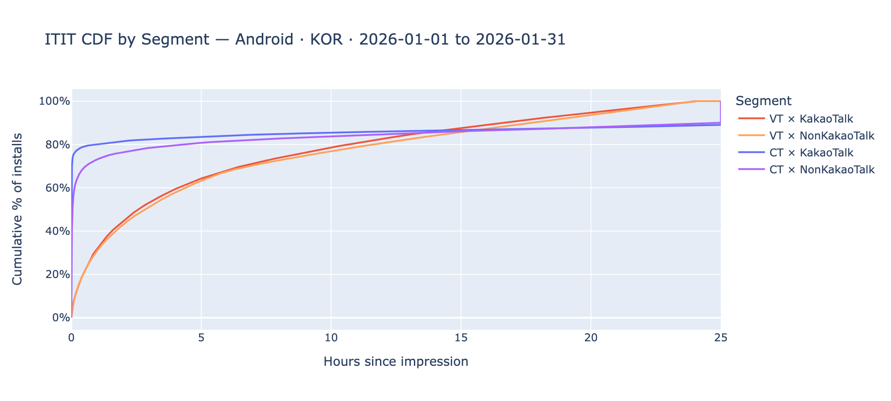
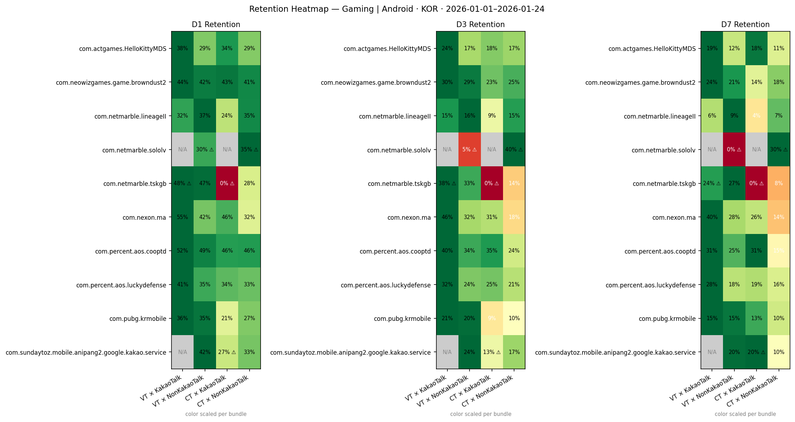
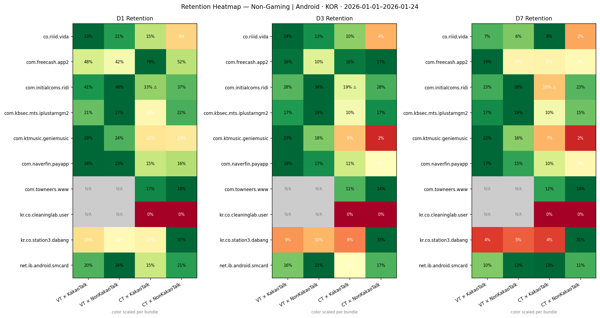
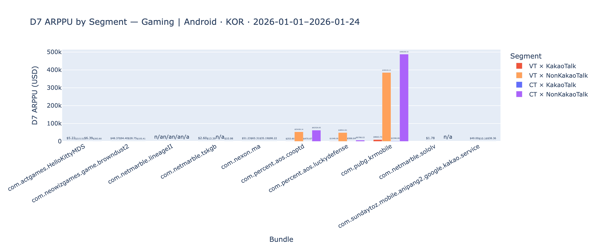
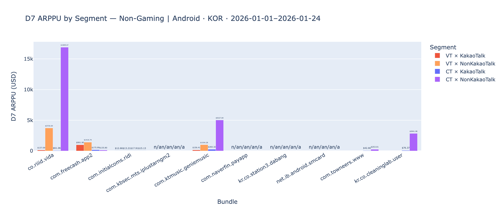

"We don't have structural evidence on incrementality, particularly on image banners (e.g. Kakao Bizboard)."
This is the parent question. Everything in this report is downstream of the need to build a defensible narrative — and, where possible, causal evidence — for high-VT campaigns on image-banner inventory in KOR.
| Platform | Track | Evidence approach |
|---|---|---|
| Android | Bulk incrementality test (primary) | Causal — holdout experiment on KakaoTalk-heavy advertisers. Android supports clean measurement. |
| iOS | (2-1) [TBD: alternative incrementality proxy on iOS] | Probabilistic attribution prevents direct measurement. Candidates: SKAN postback pattern analysis, supply-side IDFA-consented subset as instrument, MMP-based geo-holdout. |
| iOS | (2-2) User quality comparison VT vs CT by format | Observational — if IB performs materially better than other formats, organic-poaching suspicion rises. This is the current Section 4 work. |
| iOS | (2-3) VT ↔ organic user in market | Observational — are we poaching or assisting? Overlap analysis between Moloco-attributed installs and the organic install pool. |
Framing: the report is evidence for a narrative, not a substitute for the experiment. The observational work here supports supply / reach / quality claims today; it does not resolve the incrementality question the workshop opened with.
fact_dsp_publisher). KOR-office × KOR-target: iOS 78.8% / Android 50.4%.fact_dsp_creative).codered_bid): Android 8.8% of Moloco-reachable IDs are only seen on KakaoTalk; iOS 11.6% (IDFA-consented subset only — iOS figure is directional).The data shows the two platforms are structurally different — a unified narrative will either overclaim on iOS or underclaim on Android.
| Dimension | Android | iOS |
|---|---|---|
| KakaoTalk share of IB installs | 42.3% (dominant) | 26.3% (co-top with Block Blast 27.5%) |
| Kakao-IB VT vs Non-Kakao IB VT | 94.0% vs 83.5% — +10.5pp Kakao-specific signal | 97.7% vs 97.6% — essentially equal, no Kakao-specific signal |
| Excl-Kakao impact on aggregate VT | −8.3pp | −4.1pp |
| Exclusive reach measurability | Clean (GAID) | ATT-biased (directional only) |
| Incrementality measurability | Holdout viable | Probabilistic attribution blocks it — no design yet |
What we observe (§2d, §2e): KOR Banner win rate iOS 41.2% / Android 28.5% — highest of any top-6 market. Closest peer is GBR iOS 19.7% (half of KOR). Non-gaming IB publisher inventory wins 2× more than Gaming IB (Android 33.2% vs 16.4%; iOS 48.2% vs 28.2%).
What we can't tell Sales yet: whether the high win rate reflects (a) lower competition on KOR banner supply, (b) higher Moloco bid prices, (c) lower bid floors on KakaoTalk/Daum/tmobi inventory, or (d) KAKAO-exchange-specific auction dynamics. None of these has been decomposed.
Reference: vt_landscape.ipynb. Data window: 2026-01-01 → 2026-01-31, fact_dsp_publisher for aggregate VT and campaign-level distribution.
Aggregate VT ratio by target country × OS (KOR-targeting, all offices). Hover for values; click legend to isolate OS.
Reads asKOR tops every top-10 spend market on both platforms; iOS VT runs ~1.7× Android across the ten countries.
| Slice | Metric | Value |
|---|---|---|
| KOR target × All offices | Aggregate VT ratio iOS | 63% |
| KOR target × All offices | Aggregate VT ratio Android | 37% |
| KOR target × KOR office | Aggregate VT ratio iOS | 78.8% |
| KOR target × KOR office | Aggregate VT ratio Android | 50.4% |
| KOR target × KOR office | Spend share in VT > 60% bucket, iOS | 77% (1,302K / 1,702K) |
| KOR target × KOR office | Spend share in VT > 60% bucket, Android | 35% (1,010K / 2,922K) |
Reference: ib_format_deepdive.ipynb. Data window: L30D from run date. Tables: fact_dsp_creative (install share), bidrequest2026* (supply-side format mix, 1/10,000 sampled), fact_supply (bidding rates).
IB install share — KOR vs global benchmark, by OS. fact_dsp_creative, L30D.
Reads asKOR iOS IB share is 2.1× the global benchmark (42% vs 19.9%); KOR Android is 2.4× (27% vs 11.3%).
IB install share by country — top 5 spend markets + Others, by OS. Hover for exact values.
Reads asKOR leads on both platforms. Closest comparators are DEU iOS (28%) and JPN Android (13%). USA/GBR/DEU Android all sit below 7%.
100% stacked bid-request format mix (Banner / Native / Interstitial) by country × OS. Countries sorted by max Banner share desc. Sampled 1/10,000; totals scaled.
Reads asKOR has the highest Banner share on both platforms (iOS 47%, Android 37%). On Android, JPN has the largest Native share (37%); USA and Others are Interstitial-heavy.
Bid rate (bids / bid requests) by inventory format × country, per OS. Hover for exact rate.
Reads asInterstitial has the highest bid rate in KOR on both OS (iOS 31.5%, Android 21.1%). Among the remaining formats, Banner is highest in KOR iOS (19.3%) but on KOR Android Video-Interstitial (9.2%) slightly edges Banner (8.5%).
Win rate (bids won / bids) by inventory format × country, per OS. All 6 markets shown.
Reads asKOR Banner wins at 41.2% iOS / 28.5% Android — the highest Banner win rate of any of the 6 markets. KOR Native win rate is also elevated (35% iOS, 19% Android). USA Banner win rate (iOS 15.1%, Android 10.7%) is in the lower half of the distribution.
Splits KOR IB bid-funnel by req.app_is_gaming — a publisher-side flag on whether the app serving the bid request is categorised as a game. This does not reflect the advertiser's vertical.
KOR IB bid-request volume by publisher genre (L30D, fact_supply, cr_format='ib').
Reads asNon-gaming publishers supply more KOR IB bid requests than gaming publishers on both platforms (Android 70% non-gaming, iOS 56% non-gaming).
KOR IB funnel rates by publisher genre — bid rate, win rate, imp-to-bid, split by OS.
Reads asNon-gaming IB out-performs gaming IB on every funnel stage, both OS. Android: non-gaming win rate 33.2% vs gaming 16.4% (roughly 2×); iOS: non-gaming win rate 48.2% vs gaming 28.2% (~1.7×). Bid rate gap is smaller but in the same direction. The KOR IB over-index is concentrated in non-gaming publisher inventory (KakaoTalk, tmobi, Daum, etc. — see §3a).
fact_dsp_creative, L30D). Global averages are 19.9% / 11.3%. KOR is ~2× the benchmark on both platforms.bidrequest2026*). KOR iOS Banner share is the highest of the top-5 spend markets; KOR Android Banner share is also higher than USA / GBR / DEU.req.app_is_gaming) — the exchange split (KAKAO vs others) is covered in §3 (KakaoTalk publisher section). Combined genre × exchange interaction has not been computed.Reference: kr_vt_deepdive.ipynb §1–§4 and kakao_deepdive.ipynb. Data window: 2026-01-01 → 2026-01-31 for VT; Mar 28–29 for unsampled reach snapshot. Tables: fact_dsp_publisher, fact_dsp_all, codered_bid, prod_stream_view.imp, prod_stream_view.pb.
The numbers were re-queried from fact_dsp_all (Jan 2026, KOR, creative.format = 'ib') and match exactly — e.g. com.kakao.talk Android 122,954 installs / 94.07% VT; Block Blast iOS 68,219 installs / 98.94% VT. This is not a data-quality issue.
The uniformity is a structural property of IB format + view-through attribution, not a publisher-specific phenomenon. Cross-format VT ratios in the same KOR Jan-2026 window show:
KOR VT ratio by creative.format × OS (Jan 2026, installs ≥ 1,000). Source: fact_dsp_all.
Reads asImage-banner formats (ib, nl Native-List, ni Native-Image) are structurally VT-heavy — KOR Android ib 89.4%, nl 80.1%, ni 61.1%; iOS ib 97.6%, nl 96.7%, ni 91.1%. Click-through-prone formats (vi Video-Interstitial, ri Rewarded, ii Interstitial) are 3–7% VT. So "high VT across IB publishers" is consistent with the format itself, not suspicious per-publisher data.
Why this makes sense mechanically: banner CTR on KOR iOS is typically well below 1% (e.g. Block Blast iOS CT-to-install 0.06% per click). Banner impressions rarely convert via click; most of the installs attributed to a banner happen via the 24h view-through window instead. The two Android outliers — HanaMembers (11.8% VT) and CashMyCharge (29.7% VT) — have CT-heavy install paths and appear as red flags in the chart below.
KOR Android IB — top 20 publishers by install share, with VT ratio overlaid. Hover for bundle / counts / VT %.
Reads asKakaoTalk is 42.3% of Android IB installs — roughly 4× the next-largest publisher (tmobi app at 10.7%). Most top-20 publishers have VT ratios between 85–98%; two outliers (HanaMembers 11.8%, CashMyCharge 29.7%) run much lower.
KOR iOS IB — top 20 publishers by install share, with VT ratio overlaid.
Reads asBlock Blast (27.5%) and KakaoTalk (26.3%) together account for ~54% of KOR iOS IB installs. All top-20 iOS IB publishers have VT ratio ≥ 96.4% — the spread is narrower than on Android.
| OS | Kakao exchange share of IB installs | KakaoTalk publisher share of IB installs | Kakao IB VT ratio | Non-Kakao IB VT ratio |
|---|---|---|---|---|
| Android | 55.8% | 42.3% | 94.0% | 83.5% |
| iOS | 35.2% | 26.3% | 97.7% | 97.6% |
Aggregate VT ratio by Kakao-inclusion condition (KOR office × KOR target).
Reads asKakaoTalk-only VT ratio is very high (Android 88.7%, iOS 98.2%). Excluding KakaoTalk drops Android VT by 8.3pp and iOS by 4.1pp — the Android impact is double iOS in absolute terms.
| OS | All (incl. KakaoTalk) | KakaoTalk Only | Excl. KakaoTalk | Δ (All → Excl.) |
|---|---|---|---|---|
| Android | 50.4% | 88.7% | 42.1% | −8.3pp |
| iOS | 78.8% | 98.2% | 74.7% | −4.1pp |
Device-ID reach partitioning by OS. Source: moloco-dsp-profile-prod.bidlog.codered_bid, 2 days (Mar 28–29, 2026). Sampled volumes multiplied by 10,000. iOS is IDFA-consented only.
Reads asAndroid — 8.8% of Moloco-reachable IDs are KakaoTalk-exclusive (2.5M devices), 43.6% overlap, 47.6% seen only on non-Kakao publishers. iOS directional — 11.6% exclusive, measured only on the IDFA-consented pool (10.3M vs Android 28.5M).
| OS | KakaoTalk-exclusive | Overlap | Non-Kakao only | Total Moloco-reachable | Exclusive reach rate |
|---|---|---|---|---|---|
| Android | 2,508,836 | 12,407,482 | 13,565,791 | 28,482,109 | 16.8% |
| iOS | 1,193,758 | 2,744,396 | 6,385,980 | 10,324,134 | 30.3% |
For the top 5 KakaoTalk-spend bundles per vertical × OS, kakao_deepdive.ipynb §2 range-joins KakaoTalk impressions against install events within 1-hour and 3-hour windows (prod_stream_view.imp × prod_stream_view.pb). Total installs of target bundles: 8,789,070.
Share of total target-bundle installs with prior KakaoTalk exposure within each window — split into last-touch (Moloco-attributed) and assisted (install attributed elsewhere but had Kakao impression prior).
Reads asAt a 3h window, 0.78% of the 8.79M target-bundle installs had a prior KakaoTalk impression; 0.22pp of that is assisted to another publisher. Extending from 1h to 3h widens touch rate from 0.48% → 0.78% (+63%). Coincidence only — not causation.
| Window (h) | Total installs | Had Kakao imp | Last-touch | Assisted | Touch rate | Last-touch rate | Assisted rate |
|---|---|---|---|---|---|---|---|
| 1 | 8,789,070 | 42,013 | 31,543 | 10,470 | 0.48% | 0.36% | 0.12% |
| 3 | 8,789,070 | 68,337 | 48,795 | 19,542 | 0.78% | 0.56% | 0.22% |
fact_dsp_all).codered_bid snapshot: 8.8% of Moloco-reachable Android IDs appear only on KakaoTalk (2,508,836 of 28,482,109). The Android exclusive-reach-rate among Kakao-reached IDs is 16.8%.kakao_conversion_rate_by_window.png uses (a). Both have not been reconciled into a single headline.Reference: kr_vt_deepdive.ipynb §5. Scope: Android only, KOR-targeting, top 10 KakaoTalk-spend bundles per vertical (gaming / non-gaming), Jan 2026. Source: focal-elf-631.prod_stream_view.cv. VT flag = cv.view_through = true. Minimum per-cell install threshold = 50.
Bundles (advertisers) are ranked by gross spend on KakaoTalk publisher supply, separately per vertical. Exact criteria from cell 37 of kr_vt_deepdive.ipynb:
fact_dsp_publisherdate_utc BETWEEN '2026-01-01' AND '2026-01-31' · campaign.country = 'KOR' · campaign.os = 'ANDROID' · advertiser.office = 'KOR' · publisher.app_market_bundle = 'com.kakao.talk'product.app_market_bundle, product.is_gamingSUM(gross_spend_usd) DESC, take top 10 per is_gaming bucket (Gaming = True, Non-Gaming = False; NULL bucket excluded).So "top-10 Gaming" = the 10 game advertisers that spent the most on KakaoTalk inventory in KOR-office × KOR-target Android campaigns during Jan 2026. "Top-10 Non-Gaming" = same within the non-gaming vertical. This is not top-10 by overall Moloco spend or total install volume — a bundle that spent nothing on KakaoTalk (even if it's a top-5 Moloco KOR advertiser) would not appear.
The resulting bundle set is then used for §4a (ITIT), §4b (retention) and §4c (paying rate). Install / retention / paying data is pulled on those bundles from any publisher (not restricted to KakaoTalk), so the four segments (VT×KT, VT×Non-KT, CT×KT, CT×Non-KT) have different sample sizes per bundle — and some cells fall below the 50-install threshold and are N/A.
Median ITIT and % of installs within 1 hour / 5 minutes, by 4-segment. Aggregated across top-10 Kakao-spend Android bundles (Jan 2026).
Reads asCT segments front-load within the first hour (73–80%) and are dominated by sub-5-minute installs (56–75%). VT segments are flatter — ~31–32% within 1h, ~7% within 5min — and look nearly identical between KakaoTalk and Non-KakaoTalk.
| Segment | Installs (n) | Median ITIT (min) | % within 1 hr | % within 5 min |
|---|---|---|---|---|
| VT × KakaoTalk | 97,581 | 154.4 | 32.1% | 7.3% |
| VT × NonKakaoTalk | 126,205 | 169.0 | 31.0% | 7.2% |
| CT × KakaoTalk | 12,763 | 0.5 | 80.1% | 75.4% |
| CT × NonKakaoTalk | 136,849 | 2.9 | 73.1% | 56.4% |

Reference: full CDF shape (static, from notebook). Interactive summary above captures the key percentile markers.
kr_vt_deepdive.ipynb output shows 10 rows in the DataFrame preview; remaining 63 rows require a notebook re-run with full display.max_rows or a CSV export to render interactively. The full static heatmap is preserved below; interactive chart covers the 10 explicitly-visible high-install bundles.
D1 / D3 / D7 retention rate per segment for 10 bundles with visible per-cell data. Each dot is one bundle × segment. Hover for bundle and exact rates.
Reads asRetention spreads widely across bundle × segment cells (D1 between 13% and 48% in this sample). High-install cells (com.naverfin.payapp VT×Non-KT D1 23%, com.ktmusic.geniemusic CT×Non-KT D1 13%) cluster at the lower end; smaller-n cells look more extreme in either direction.

Static heatmap — Gaming (full 10 bundles × 4 segments × D1/D3/D7, per-row normalised colour). Preserved from notebook.

Static heatmap — Non-Gaming. Grey cells = N/A (<50 installs).
D7 paying rate (paying users / installs) by segment — Gaming top-10 bundles. Dashes represent N/A cells.
Reads asHelloKittyMDS, nexon.ma, cooptd and browndust2 show VT×KakaoTalk paying rates at or above VT×Non-KakaoTalk. Several bundles (lineageII, pubg, tskgb) sit near 0% across all segments and carry no paying-rate signal.
D7 paying rate by segment — Non-Gaming top-10 bundles. Many bundles have 0% paying rates on non-gaming.
Reads asfreecash, ridi and geniemusic are the only bundles with meaningful paying signal. The remaining 7 bundles register 0% or near-0% across all segments — paying rate is not an informative quality metric for most non-gaming bundles.

Static ARPPU chart — Gaming (from notebook, contains $ values; omitted from interactive to avoid noise on N/A cells).

Static ARPPU chart — Non-Gaming.
Yes, KOR-target VT ratio is higher than any other top-10 spend market — iOS 63%, Android 37% (aggregate over KOR-target × all offices, Jan 2026). Observation-backed partial explanation: KOR installs concentrate in IB format (42% iOS / 27% Android vs global 19.9% / 11.3%), and IB has high VT ratios across all publishers; KakaoTalk alone is 42.3% of Android IB installs. We have not measured what share of the total VT elevation is attributable to format mix vs other factors — that decomposition is an open question (§2).
§1 VT by country × OS; §2 IB install-share benchmark + supply-side format mix; §3a publisher composition and Kakao IB VT ratios.
On several (not all) top-10 gaming bundles on KOR Android, VT × KakaoTalk D1/D3/D7 retention is comparable to or higher than CT × Non-KakaoTalk. On non-gaming bundles many cells are N/A at the 50-install threshold. This observation is consistent with two hypotheses — "VT users are real" and "Moloco is being credited for organic installs" — which observational data cannot separate.
§4 retention heatmap (gaming + non-gaming), D7 paying rate.
What the data shows about what would be removed: KakaoTalk is 42.3% of KOR Android IB installs (fact_dsp_all), and in the unsampled 2-day snapshot 8.8% of Moloco-reachable Android device IDs appear only on KakaoTalk inventory. The aggregate VT ratio would also fall by 8.3pp on Android (50.4% → 42.1%), which is an accounting change from removing a high-VT segment. Whether those 8.8% exclusive-reach devices would install via other channels without KakaoTalk exposure is an open question that observational data cannot answer.
§3a publisher composition, §3b exclude-Kakao VT comparison, §3c reach donut.
This is a structural challenge raised by Hankhil Lee. Observationally, aggregate Android KOR VT ratio (37%) is lower than iOS (63%), and Android's KakaoTalk-exclusion delta is larger (−8.3pp vs iOS −4.1pp). We have not run an incrementality measurement on Android yet; the P2 holdout experiment is designed to produce that number.
§1 landscape, §3 Kakao by OS. The P2 holdout experiment is designed to produce a causal Android lift estimate that would address this asymmetry directly.
| Gap | Why it matters | Status |
|---|---|---|
| No structural incrementality evidence (workshop parent question) | Observational data supports supply / reach / quality observations but cannot prove incrementality. | Open — parent gap |
| iOS incrementality measurement path (track 2-1) | Probabilistic attribution blocks an Android-style holdout. No alternative proxy has been scoped. | Open — unscoped |
| Android-vs-iOS performance asymmetry | No answer to "why isn't Android better than iOS, given Android is measurable." Resolution is downstream of the incrementality test. | Open |
| §5-E vertical summary not produced | No single-sentence per-vertical quality summary for sales to quote. | Pending |
| Assist denominator framing | Total-installs base vs exposed-device base produce different headline numbers. | Decision open |
| IB over-index decomposition | Supply-side and bidding-side charts exist but the 42% vs 19.9% gap has not been decomposed into components. | Pending |
| Retention / ARPPU CSV export | Full 73-row DataFrames not persisted to CSV — blocks full-interactive heatmap rendering. | Pending (notebook re-run) |
| Stability of 8.8% / 11.6% Kakao-exclusive reach | Snapshot is 2 days; stability over 30d not verified. | Caveat |
| iOS reach under ATT | iOS 11.6% is measured on IDFA-consented traffic only; true iOS reach is uncertain. | Caveat (directional) |
| KOR VT ratio scope reconciliation (63%/37% vs 78.8%/50.4%) | Same question has two answers depending on denominator; surfaced in §1 scope note. | Surfaced |
kr_vt_deepdive.ipynb cell 49 (§5-E vertical summary) — aggregate retention + ARPPU by vertical with Segment D baseline.df_retention.to_csv() and df_arppu.to_csv() to cells 42 and 46 and re-run — so interactive heatmaps can replace the static PNGs in §4b / §4c.cv.view_through, ITIT, 4-segment framework) and recurring gotchas into the BQ agent knowledge base.Only specific observations that appear in the report, classified by measurement confidence. Interpretations and hypotheses are in §6 open questions and §7 P2 experiments.
| Observation | Confidence | Measurement basis |
|---|---|---|
| KOR-target VT ratio is iOS 63% / Android 37% (all offices, Jan 2026) | HIGH | fact_dsp_publisher. |
| KOR-office × KOR-target VT ratio is iOS 78.8% / Android 50.4% | HIGH | Same source, restricted by advertiser.office. |
| KOR IB install share is 42% iOS / 27% Android vs global 19.9% / 11.3% | HIGH | fact_dsp_creative, L30D. |
| KOR iOS Banner bid-request share is 46.5% vs Global benchmarks | HIGH | bidrequest2026*, sampled 1/10,000. |
| KakaoTalk is 42.3% of KOR Android IB installs and 26.3% of iOS IB installs | HIGH | fact_dsp_all. |
| Kakao IB VT Android 94.0% vs Non-Kakao 83.5%; iOS 97.7% vs 97.6% | HIGH | fact_dsp_all. |
| KakaoTalk exclusion: −8.3pp Android, −4.1pp iOS (KOR-office baseline) | HIGH | fact_dsp_publisher. |
| 8.8% of Moloco-reachable Android IDs are KakaoTalk-exclusive (2-day) | MEDIUM-HIGH | Unsampled codered_bid, Mar 28–29. |
| 11.6% of iOS IDFA-consented IDs are KakaoTalk-exclusive | LOW-MEDIUM | Same source; ATT-biased. |
| On several gaming bundles, VT×KakaoTalk retention ≥ CT×NonKakaoTalk | MEDIUM | prod_stream_view.cv. Holds for gaming; many non-gaming cells N/A. |
| ITIT medians: VT×KT 154 min, VT×NonKT 169 min, CT×KT 0.5 min, CT×NonKT 2.9 min | HIGH | Computed from cv.happened_at − imp.happened_at. |
| Assist: 0.78% of target-bundle installs had KakaoTalk touch in 3h window | MEDIUM | prod_stream_view.imp × prod_stream_view.pb. Top-5-per-vertical subset. |
This report went through three review rounds with a skeptical-judge agent. Substantive edits between versions:
kakao_deepdive cell 8: Android 8.8 / 43.6 / 47.6, iOS 11.6 / 26.6 / 61.9.